-
The Mandelbrot Set is a famous mathematically generated fractal (shape of infinite perimeter), and is one of the best known examples of
mathematical beauty
-
It is represented on the
complex axis
, and is generated iteratively using the equation - I created this as the final design project for our introduction to Digital Systems course
-
My implementation was written for the
DE1-SoC
development kit, using aPS2 keyboard
as the input device, and outputting aVGA signal
-
It supports
panning
,zooming
, and other options tocontrol the accuracy
(number of iterations) andcolor output
- Github
- Wikipedia
Projects
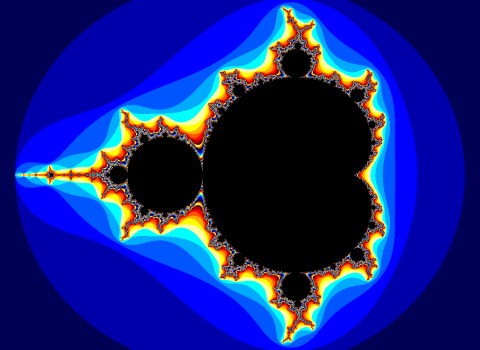
The Mandelbrot Set
A
Verilog
project which generates an interactive mandelbrot set and outputs VGA
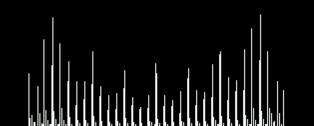
Audio Visualizer
Bare metal audio visualizer written in
C
which reads from audio in and displays the DTFS through VGA-
The Discrete Fourier Transform (DTFS) represents the
frequency domain
representation of a signal, in this case an audio signal -
My teammate and I worked on this project as part of our
computer organizations
course, as part of our final project -
We wrote this program for the DE1-SoC on bare metal, which involved utilizing
memory mapped IO
and creating or implementingcustom math functions
-
Furthermore we tested several signal processing steps to improve the final output, including
signal averaging
, and severalwindowing functions
- We were limited by the fairly low sampling rate of the Analog-Digital Converter (ADC) present on the board, and weren't able to get a clean or visually appealing output
- Github
- More info...
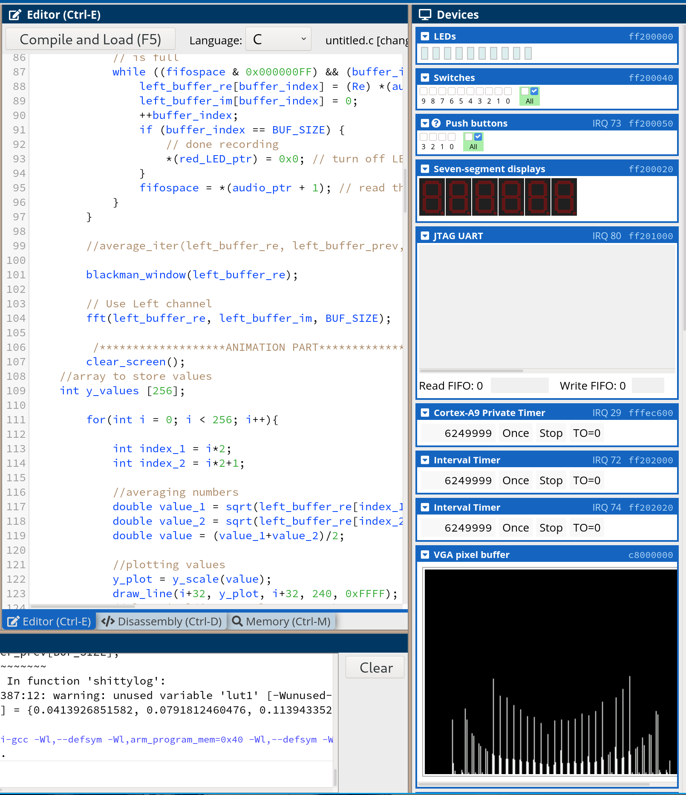
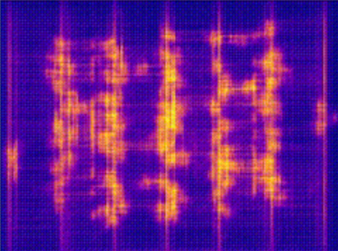
VTR - Verilog to Routing
A worldwide collaborative project to provide open source CAD for FPGA research and development, mostly
C++
-
VTR is an open source CAD software for FPGA research, taking a
architecture description file
, andVerilog
to generate a mapping of the circuit, with various quality metrics - I got to contribute to this project as part of a summer research internship, where most of my focus was on the routing portion of the code
-
I was tasked with implementing a
hold time violation
(when a signal is too fast) resolving algorithmRCV
, which could be used to route circuits which would otherwise require manual intervention -
My work involved
optimizing
the algorithm, to ensure that it had no performance impact on the normal flow of the program, as well as completing the work started by a previous student -
The basic idea behind RCV, is to setup '
timing budgets
', which are minimum and maximumrecommended lengths
for each connection, the router will be encouraged to route connections so their lengths will be contained in these budgets - Github
- My Reading List
- Link to RCV Paper

GIF taken from VTR Github
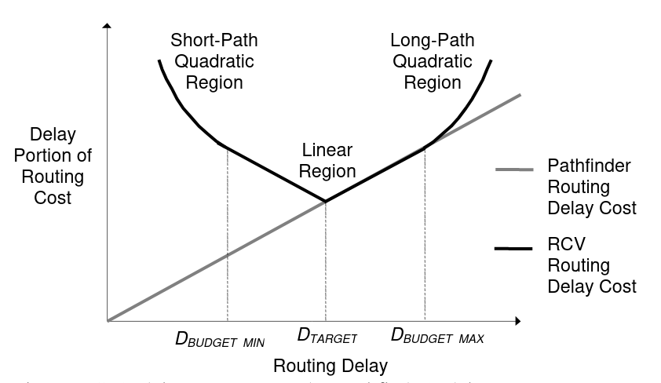
RCV (Routing Cost Valleys) connection cost function

UTFR - University of Toronto Formula Racing
A design team which annually designs and manufactures formula style
racecars
to compete in FSAE events worldwide-
FSAE is a worldwide student oriented organization, which creates and hosts events
worldwide
for engineering students to compete against one another in a number of events -
Teams are expected to design and build a new car each year, which encourages
constant improvement
-
As part of UTFR I have experienced both the
design
, andmanufacturing
stages of development, and learned how to use tools I would have never had the chance to otherwise -
Things I have manufactured include
solenoid housings
for an electronic gear shifter, and numerous parts across the car especially insuspension
andsteering
-
I have also designed a number of parts for
steering
on our latest car, as well as manufactured almost all of said parts, until COVID stopped me early :( david.peter.baines@gmail.com I'm also helping the electric team model our wiring harness in CAD, usingVesys
to generate the harness, andSolidworks
routing to route it on the car model - UTFR Website
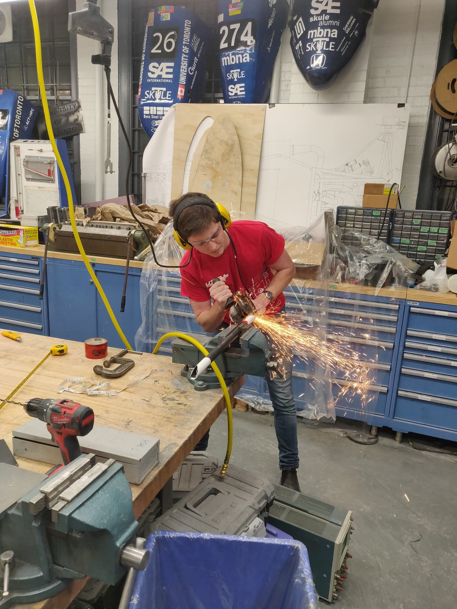
Credits to Alex Ramos
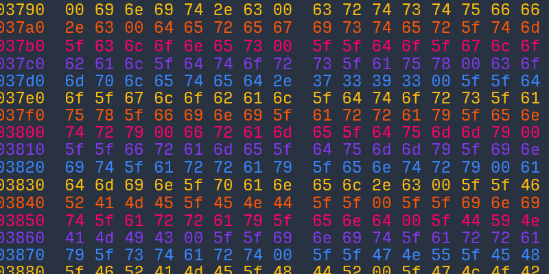
Reverse Engineering Exploration
My efforts into learning how to
disassemble
and analyze binaries, as well as how to abuse security flaws-
Reverse engineering is the idea of taking something apart, and analysing its design, and its flaws to either
exploit it
, orimprove upon it
-
A couple of years ago I found a video by popular youtuber Sethbling, where he combines a number of exploits in Super Mario World on the SNES to recreate flappy bird in game, a video I
highly recommend
-
I then wanted to learn more, and soon had disassembled Super Mario World and written a
patch
to give infinite coins whenever you jumped, in doing so learning a lot aboutassembly
, and how computers work on a lower level -
Lately I have been trying these online puzzles called
crackmes
, which areexecutable binaries
, as well as a description of the goal, such as to rig an election in one -
In doing so I have learnt the basics of a number of techniques such as
patching
,buffer overflow exploits
,LD_PRELOAD exploits
, and creating customkeygens
for programs -
I have also used this to learn how to use tools on Linux, as well as
Ghidra
, an open source NSA reverse engineering tool - Where I get my puzzles

Buffer Overflow Exploit for a crackme
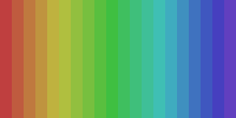
Sorting Algorithms
More of a visual project, just to aid my understanding of these algorithms for a course, gifs generated in
C
Bubble Sort
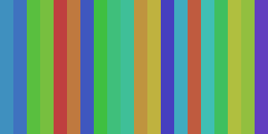
Insertion Sort
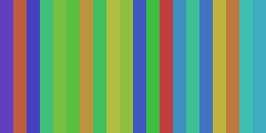
Selection Sort
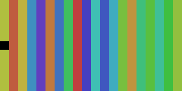
Quick Sort